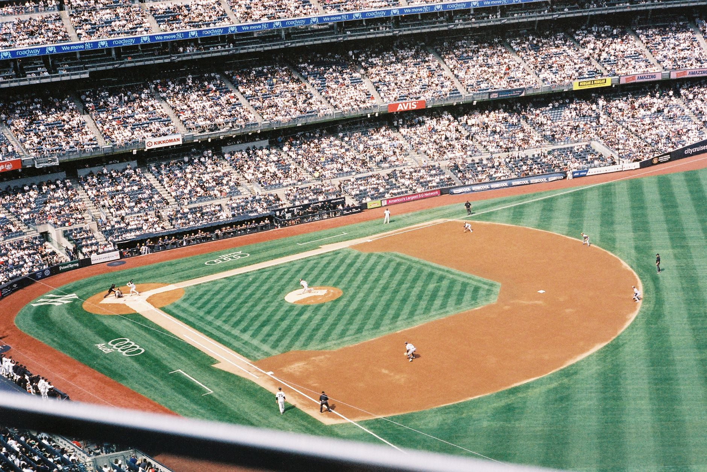

The basic setup of the game
Baseball is a game played between two teams, typically consisting of nine players each. The objective is simple: score more runs than your opponent by hitting a ball and running around a series of four bases. The game is played on a field shaped like a diamond, featuring a pitcher's mound in the center and four bases arranged in a square.
The field is divided into two main areas: the infield and the outfield. The infield contains the diamond and the bases, while the outfield is the large grassy area beyond the diamond. Understanding this layout helps you follow where players are positioned and how they defend the field.
How innings and scoring work
Unlike many sports that use a clock, baseball is measured in innings. A standard professional game lasts nine innings. Each inning is split into two halves: the top half and the bottom half. During the top half, the visiting team bats, and during the bottom half, the home team bats.
A team's turn at bat ends when they record three outs. Once three outs are made, the teams switch roles. This cycle repeats until all nine innings are completed. If the score is tied after nine innings, the game goes into extra innings until a winner is determined.
In baseball, the scoreboard doesn't count minutes; it counts the progress of the battle between the pitcher and the batter.
Understanding strikes, balls, and walks
The duel between the pitcher and the batter is the heart of the game. The pitcher tries to throw the ball through a specific area called the strike zone, which is the imaginary box over home plate between the batter's knees and chest. If the batter swings and misses, or if the ball passes through the zone without being hit, it is called a strike.
If the pitcher throws the ball outside of the strike zone and the batter does not swing, it is called a ball. Accumulating too many balls gives the batter an advantage. If a batter receives four balls, they are awarded a walk, meaning they get to move to first base automatically without having to hit the ball.
Ways to get an out
The defensive team wants to record three outs to end the offensive team's turn. There are several ways to achieve this. The most common is a fly out, which happens when a fielder catches a hit ball before it touches the ground. Another common method is a ground out, where a fielder picks up a ball on the ground and throws it to first base before the runner arrives.
A tag out occurs when a fielder touches a runner with the ball (or the glove holding the ball) while the runner is not touching a base. This is frequently seen when players try to steal bases or when runners are caught between bases. Understanding these mechanics is key to following the defensive strategy of the game.
Home runs and base running
One of the most exciting moments in baseball is the home run. This occurs when a batter hits the ball so far that it leaves the playing field entirely, usually over the outfield fence. When this happens, the batter and any runners currently on base get to trot around the bases and score runs automatically.
Even without a home run, players must be strategic with base running. They aim to advance to the next base as quickly as possible after a hit. A player who manages to touch all four bases in one play is said to have scored a run, adding a point to their team's total score.
Mastering the game as a player
Learning the rules is the first step toward becoming a fan, but if you are looking to transition from a spectator to a player, you will need to focus on fundamental skills. Hitting is often considered the hardest skill to master in all of sports, requiring perfect timing and coordination.
To improve your performance on the field, consistent practice is essential. If you are struggling with your contact or power, we highly recommend checking out our guide on the Best Baseball Batting Drills to Fix Your Swing Fast at https://dhyey.bond/blog/best-baseball-batting-drills-to-fix-your-swing-fast/ to take your game to the next level.
See Also
If you enjoyed this Baseball Guide article, check out Best Baseball Batting Drills to Fix Your Swing Fast for more useful reading.